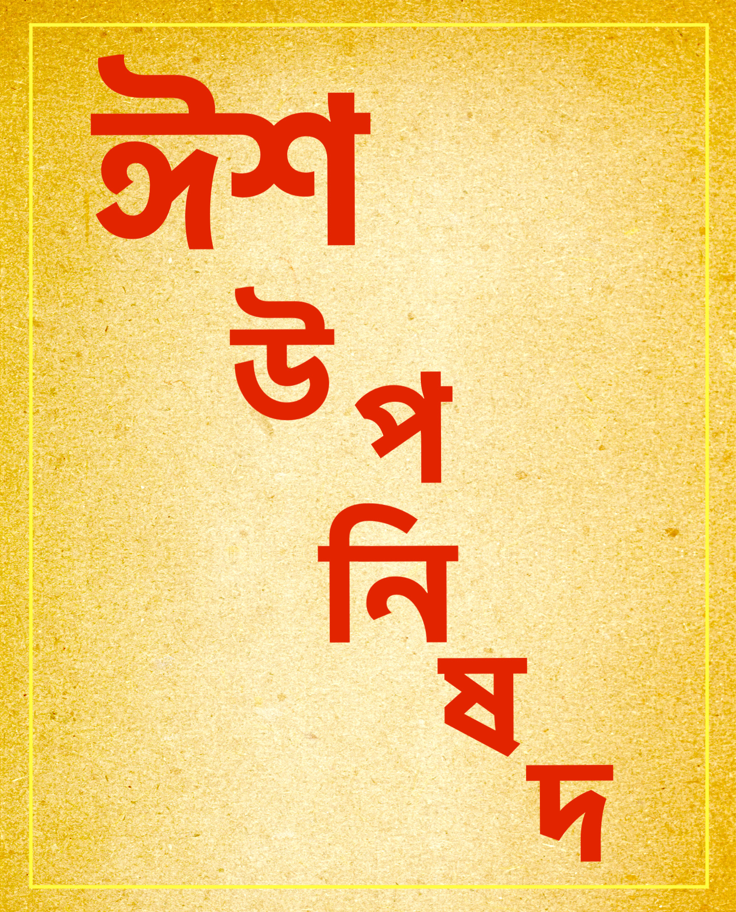

🔥 ঈশ উপনিষদ ১ 🔥
ঈশা বাস্যমিদং সর্বং যৎ কিঞ্চ জগত্যাং জগৎ ।
তেন ত্যক্তেন ভুঞ্জীথা মা গৃধঃ কস্যস্বিদ্ ধনম্ ॥
ঈশা, বাস্যম্, ইদং, সর্বং, যৎ, কিম্, চ, জগত্যাং, জগৎ। তেন, ত্যক্তেন, ভুঞ্জীথা, মা, গৃধঃ, কস্যঃ, স্বিৎ, ধনম্॥
মূলানুবাদ:
জগতে যে কিছু পদার্থ আছে, তৎসমস্তই আত্মরূপী পরমেশ্বর দ্বারা আচ্ছাদন করিবে, অর্থাৎ একমাত্র পরমেশ্বরই সত্য, জগৎ তাহাতে কল্পিত—মিথ্যা, এই জ্ঞানের দ্বারা জগতের সত্যতা-বুদ্ধি বিলুপ্ত করিবে। [তাহাতেই তোমার হৃদয়ে আসক্তি-ত্যাগরূপ সন্ন্যাস আসিবে,] সেই ত্যাগ বা সন্ন্যাস দ্বারা আত্মার অদ্বৈত নির্ব্বিকার ভাব রক্ষা কর; কাহারো ধনে আকাঙ্ক্ষা করিও না।
শঙ্কর ভাষ্যানুবাদ:
‘ঈশ্’ ধাতুর অর্থ ঐশ্বর্য্য বা শাসন-ক্ষমতা; যিনি এই জগতের শাসনে সমর্থ পরমাত্মা পরমেশ্বর, তিনিই এখানে ‘ঈশা’-পদের প্রতিপাদ্য। তিনি প্রত্যকরূপে (জীবরূপে) সর্ব্ব বস্তুর অভ্যন্তরে থাকিয়া, সমস্ত জগৎ যথানিয়মে শাসিত ও পরিচালিত করিতেছেন। সেই সর্ব্বাত্মরূপী পরমেশ্বর দ্বারা পৃথিবীস্থ সমস্ত বস্তুকে আচ্ছাদিত করিবে,–সর্ব্বত্র তাঁহার সত্তা উপলব্ধি করিবে। [অভিপ্রায় এই যে] জগৎকারণ পরমেশ্বরই জীবরূপে সর্ব্বদেহে বর্ত্তমান আছেন; এবং তাঁহার সংকল্পপ্রসূত স্থাবর-জঙ্গমময় এই জগৎ বস্তুতঃ মিথ্যা হইয়াও তাঁহাকে আশ্রয় করিয়াই সত্যের ন্যায় প্রতিভাত হইতেছে। সেই পরমাত্মরূপী আমিই এই জগৎ, আমার সত্তাই জগতের সত্তা, তদ্ভিন্ন জগতের আর পৃথক সত্তা নাই; এইরূপ যথার্থ সত্য জ্ঞানের দ্বারা জগতের সত্যতা ঢাকিয়া ফেলিবে, অর্থাৎ ‘জগত সত্য’ বলিয়া যে ভ্রম ছিল, তাহা বিলুপ্ত করিবে। যেমন চন্দন ও অগরুপ্রকৃতি গন্ধদ্রব্যসমূহ জলাদি-সংস্পর্শে কখন কখন দুর্গন্ধযুক্ত বলিয়া মনে হয় সত্য; কিন্তু ঘর্ষণ করিলেই তাহার স্বভাবসিদ্ধ মনোহর সৌরভ প্রকাশ পায়, এবং আগন্তুক দুর্গন্ধ দূর করিয়া দেয়, ঠিক সেইরূপ, কর্ত্তৃত্ব-ভোক্তৃত্বপূর্ণ, ভিন্ন ভিন্ন নাম (সংজ্ঞা), রূপ (আকৃতি) ও চেষ্টা বা ক্রিয়া-সম্পন্ন এই সমস্ত জগৎ নিজে অসত্য হইয়াও, যথার্থ সত্যস্বরূপ পরমেশ্বরের আশ্রয়ে থাকিয়া সত্য বলিয়া প্রতীয়মান হইতেছে মাত্র; বস্তুতঃ উহা মিথ্যা—অধ্যস্ত মাত্র; এইরূপ সত্য ভাবনা দ্বারা জগতের সত্যতা-ভ্রম নিরস্ত হইয়া যায়।
উক্তরূপ যে লোক আপনাকে ঈশ্বরাংশ বলিয়া বুঝিতে পারে, তাহার আর পুত্র, সম্পদ বা স্বর্গাদি লোক-লাভের এষণা বা কামনা থাকে না; সুতরাং তদর্থ কর্ম্মেও অধিকার থাকে না; একমাত্র বাসনাত্যাগরূপ সন্ন্যাসেই অধিকার থাকে; তাহার ফলে সিএ লোক তখন সন্ন্যাস গ্রহণ করে। অতএব, তুমি তাদৃশ ভাবাপন্ন হইয়া, সন্ন্যাস দ্বারা আত্মাকে পরিপালন কর; অর্থাৎ জগতের মিথ্যাত্ব ভাবনাদ্বারা আত্মার আত্মত্ব (নির্ব্বাকারত্ব ও সত্যত্ব প্রভৃতি ভাবগুলি) রক্ষা কর। তুমি এইরূপে বাসনা পরিত্যাগপূর্ব্বক নিজের কিংবা পরের, কাহারো ধনের আকাঙ্খা করিও না। অথবা, ধন কাহার?—ধন ত কাহারও নহে, যাহা আকাঙ্খা করিতে পারা যায়। আত্মাই সমস্ত জগৎ, এবং সমস্ত জগৎই আত্মরূপ; সেইরূপ পরমেশ্বর-চিন্তা দ্বারা যখন সমস্ত বস্তুই মিথ্যা বলিয়া পরিত্যাগ করিয়াছ, তখন আর সেই মিথায় বিষয়ে আকাঙ্খা বা লোভ করা সঙ্গত হয় না। (৬) মন্ত্রে যে, ‘স্বিৎ’ কথাটি আছে, উহা অর্থহীন নিপাত শব্দ (বাক্যের শোভাবর্দ্ধকমাত্র)
অন্বয়:
জগত্যাম্ (এই গতিশীল বিশ্বে) যৎ কিঞ্চ জগৎ (যাহা কিছু চলমান, গতিশীল প্রপঞ্চভূত) ইদম্ সর্বম্ (এই সমস্ত) ঈশা বাস্যম্ (ঈশ্বরের বাসের নিমিত্ত বা ঈশ্বর দ্বারা আচ্ছাদিত), ত্যক্তেন (ত্যাগের সহিত) তেন ভূঞ্জীথাঃ (তাহা দ্বারা ভোগ করিবে) ; কস্যস্বিদ্ ধনম্ (কাহারও ধনে) মা গৃধঃ (লোভ করিও না, ধনাকাঙ্ক্ষা করিও না)।
সরলার্থ:
এই গতিশীল বিশ্বে যাহা কিছু চলমান বস্তু আছে তাহা ঈশ্বরের বাসের নিমিত্ত মনে করিবে (অথবা, ঈশ্বর দ্বারা এই জগতের বস্তুসমূহ আচ্ছাদিত মনে করিবে)। ত্যাগের সহিত ভোগ করিবে ; কাহারও ধনে লোভ করিও না।
ব্যাখ্যা:
এই বিশ্ব গতিশীল, চলমান৷ সর্বদাই চলিতেছে, সর্বদাই পরিবর্তিত হইতেছে। এক মুহূর্তের জন্য ইহার স্থিরতা নাই, এই জন্য ইহার নাম জগৎ৷ এই জগতের মধ্যে যাহা কিছু আছে, সেই জাগতিক প্রত্যেক বস্তুই গতিশীল, চলমান। কিন্তু এই চলমান জগৎ একটি অচল সত্তারই অভিব্যক্তি মাত্র। কারণ এক অচঞ্চল, গতিহীন নিত্য সত্তাকে আশ্রয় না করিলে জগতের চঞ্চল প্রবাহ সম্ভবই হইত না। এই অচঞ্চল নিত্য সত্তাই সমগ্র বিশ্বকে এবং বিশ্বের অন্তর্গত প্রতিটি বস্তুকে ধারণ করিয়া রাখিয়াছে। এই অচঞ্চল স্থির সত্তাই ঈশ্বর। এই ঈশ্বর সমগ্র জগৎকে আচ্ছাদন করিয়া আছেন ; অথবা বলা চলে তিনি সকল বস্তুর অন্তরে বাস করিতেছেন এবং সকলের অন্তরে থাকিয়া সব কিছুকেই তিনি নিয়ন্ত্রিত ও পরিচালিত করিতেছেন। তিনিই এই বিশ্বের অন্তরে থাকিয়া বিশ্বজগতের মধ্য দিয়া আপনাকে প্রকাশ করিতেছেন৷ মানুষকে এই অন্তর্যামী ঈশ্বরের অস্তিত্ব অনুভব করিতে হইবে। বুঝিতে হইবে ঈশ্বরের সত্তা-নিরপেক্ষ কোন কিছুরই অস্তিত্ব নাই। সর্বভূতে ঈশ্বরকে দর্শন করিতে হইবে। এই প্রকারের অনুভূতি যাঁহার হইয়াছে তাঁহার পক্ষে এই জগতের কোন বস্তুর উপরই কোনরূপ আসক্তি বা মোহ থাকিতে পারে না। স্বাভাবিক ভাবেই তাঁহার মনে আসে অনাসক্তি। ত্যাগ ও বৈরাগ্যের ভাব তাঁহার অন্তরে ভরিয়া ওঠে। তখন তিনিই পারেন সর্বভূতে ঈশ্বর দর্শন করিয়া সকলকে ভালোবাসিতে, সব কিছুকে ভোগ করিতে।
কিন্তু যেখানে ত্যাগ নাই, আছে মোহ, আছে আসক্তি সেখানে দেখা দিবে দুঃখ, দৈন্য ও অশান্তি। যিনি আসক্তিহীন তিনিই স্বাধীন। মানুষকেও এইভাবে কামনা-বাসনা ত্যাগ করিয়া জগৎকে ঈশ্বরের প্রকাশ মনে করিয়া ভোগ করিতে হইবে। এই ভাবে যিনি ভোগ করিতে পারেন তিনিই আনন্দ লাভ করেন। তাই ঋষি প্রথম মন্ত্রেই বলিয়াছেন, ‘ত্যক্তেন ভূঞ্জীথাঃ’—ত্যাগের দ্বারা ভোগ কর। ধন বা সম্পত্তি—তাহা নিজেরই হউক বা অপরেরই হউক—তাহার প্রতি লোভ করিও না।
ভাষ্যকার শংকরের মতে এই জগৎ মিথ্যা। জগৎ অসত্য হইলেও সত্যস্বরূপ পরমেশ্বরের আশ্রয়ে থাকে বলিয়া সত্য বলিয়া প্রতীয়মান হয়। কিন্তু বস্তুতঃ পরমেশ্বরই সত্য, জগৎ ঈশ্বরের উপর অধ্যস্ত বা ভ্রমরূপে কল্পিত। এইরূপ সত্য ভাবনা দ্বারা জগতের সত্যতা-রূপ ভ্রম দূর করিবে। অর্থাৎ ঈশ্বর-ভাবনা দ্বারা জগৎকে আচ্ছাদন করিয়া রাখিবে। এইরূপ ভাবনাযুক্ত হইলে পুত্র, বিত্ত, এমনকি স্বর্গাদির কামনাও ত্যাগ করিতে হইবে এবং এইরূপ ত্যাগ ও বৈরাগ্য দ্বারা পরমাত্মাকে পালন করিবে।
কিন্তু শংকরের উপরোক্ত মত আমাদের নিকট সমীচীন বলিয়া মনে হয় না। মূল শ্লোকে তো জগৎকে মিথ্যা বলা হয় নাই ; বলা হইয়াছে জগৎ চলমান, পরিবর্তনশীল, অনিত্য। এই অনিত্য জগৎ একটি নিত্য সত্তাকে আশ্রয় করিয়া আছে। কারণ এক অচঞ্চল, গতিহীন, নিত্য সত্তাকে আশ্রয় না করিলে জগতের গতি চলিতেই পারে না।
মন্তব্য:
‘ব্যস্যম্’ শব্দের বিভিন্ন অর্থ হইতে পারে, যথা : (১) আচ্ছাদনীয়, (২) পরিচ্ছদরূপে পরিধেয়, (৩) বাস্তব্য বা বাস করার যোগ্য। আচার্য শংকর প্রথম অর্থ গ্রহণ করিয়াছেন। প্রথম অর্থে, ব্রহ্ম দ্বারা এই বিশ্বকে আচ্ছাদন করিয়া রাখিবে। দ্বিতীয় অর্থে, ব্রহ্মের পরিচ্ছদ অর্থাৎ ব্রহ্ম এই বিশ্বের ভিতর দিয়া নিজেকে প্রকাশিত করিতেছেন। তৃতীয় অর্থে, এই বিশ্ব ব্রহ্মের বাসের জন্য ; এই বিশ্বরূপ গৃহে তিনি বাস করিতেছেন। দ্বিতীয় ও তৃতীয় অর্থে ব্রহ্ম এই বিশ্বের ভিতরেই অনুস্যূত আছেন। আর প্রথম অর্থে ব্রহ্মই সত্য, জগৎ মিথ্যা। তেন ত্যক্তেন ভূঞ্জীথাঃ—এই বাক্যটিরও বিবিধ অর্থ করা হইয়া থাকে, যথা : (১) তেন [সেই হেতু ; যেহেতু জাগতিক বস্তুসমূহ অনিত্য, সেই হেতু], ত্যক্তেন [ত্যাগের সহিত] ভূঞ্জীথাঃ [উহাদিগকে ভোগ করিবে] ; (২) তেন [সেই অনিত্য বস্তু দ্বারা], ত্যক্তেন [ত্যাগের সহিত], ভূঞ্জীথাঃ [ভোগের কার্য নির্বাহ করিবে] ; (৩) তেন [সেই ঈশ্বর কর্তৃক], ত্যক্তেন [বিসৃষ্ট, প্রদত্ত বস্তুসমূহ দ্বারা], ভূঞ্জীথাঃ [ভোগের কার্য নির্বাহ করিবে] ; (৪) তেন ত্যক্তেন [সেই ত্যাগের দ্বারা], ভূঞ্জীথাঃ [আত্মাকে পালন করিবে]। শংকর সর্বশেষ অর্থ গ্রহণ করিয়াছেন।
অন্বয়:
জগত্যাং (পৃথিবীতে, অর্থাৎ ব্রহ্মাণ্ডে) যৎ কিঞ্চ (যৎকিঞ্চিৎ, যাহা কিছু) জগৎ (অনিত্য, চরাচর বিকারী বস্তুসমূহ) [আছে] ইদং (এই) সর্বম্ (সমস্ত) ঈশা (নিয়ন্তা পরমেশ্বরের দ্বারা, আত্মা হইতে অভিন্ন পরমাত্মার দ্বারা) বাস্যম্ (আচ্ছাদনীয়)। তেন (সেই) ত্যক্তেন (ত্যাগের দ্বারা, অর্থাৎ জগদ্বুদ্ধি ত্যাগ করিয়া ঈশ্বর-ভাবনা অবলম্বন-পূর্বক) ভূঞ্জীথাঃ ([আত্মাকে] পালন কর [বৈদিক আত্মনেপদী প্রয়োগ]) কস্য স্বিৎ (নিজের বা পরের, কাহারও) ধনম্ (ধন) মা গৃধঃ (আকাঙ্ক্ষা করিও না)। অথবা--মা গৃধঃ (আকাঙ্ক্ষা করিও না), [কারণ] কস্য স্বিৎ ধনম্ (ধন আবার কাহার? অর্থাৎ কাহারও নহে)।
মূলানুবাদ:
ব্রহ্মাণ্ডে যাহা কিছু অনিত্য বস্তু আছে, এ সমস্তই পরমেশ্বরের দ্বারা আবরণীয়।১ উত্তমরূপ ত্যাগের২ দ্বারা (আত্মাকে) পালন কর।৩ কাহারও ধনে লোভ করিও না। অথবা—(ধনের) আকাঙ্ক্ষা করিও না,৪ (কারণ) ধন আবার কাহার ?
১ ‘সমস্ত জগৎ স্বরূপতঃ ব্রহ্ম’--এইরূপ জ্ঞানের দ্বারা আচ্ছাদনীয়। ছান্দোগ্য উপনিষদের (৬।৮।৭) ‘তুমি ব্রহ্ম’ বাক্যের ন্যয় এই বাক্যটি ব্রহ্মতত্ত্বের উপদেশক।
২ ইহা সন্ন্যাসের (মুঃ, ৩।২।৪ টীকা দ্রঃ) বিধি। মূলের ত্যক্তেন শব্দটি বিশেষণার্থে, অর্থাৎ পরিত্যক্ত (বস্তু) অর্থে, গৃহীত হইতে পারে না। কারণ, পরিত্যক্ত পুত্রাদি বা ধনাদি কাহারও পরিপালক নহে। ত্যাগ কিন্ত আত্মানুভূতির পরিপোষক।
৩ অবিদ্যাপ্রসূত শোক-মোহাদি সংসার-ধর্ম হইতে মুক্ত কর। ইহাই আত্মার পালন। আত্ম-হনন ইহার বিপরীত (ঈঃ, ৩ টীকা দ্রঃ)।
৪ ইহা সন্ন্যাসীর পালনীয় নিয়মবিধি।